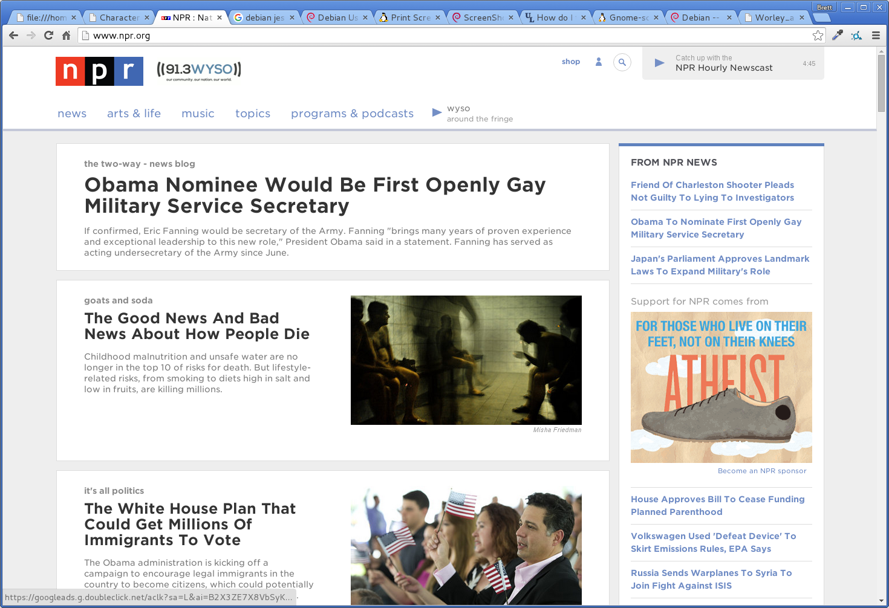

Web Development Issues Assignment
Summary
The assignment was to find a website, or websites, that displayed good and bad design. I ended up with picking one site that displayed both good and bad design.
The website i picked was www.npr.org
Good Design
- Good Usability and ease of finding topics
- Uses a tiling system for the different stories that does not take up too much space
- Menu buttons and tabs are at the top of the screen for ease of moving around
- Simple design without too much going on within the screen space
- Easy to read typography and follows good graphics design
- Site has a similar feeling on mobile devices
Bad Design
- Menu buttons for topics are in a different place on mobile devices, hidden in a menu tab
- As you go through links to different areas, the site does not show where you are exactly very well
- Main page is very long, have to scroll 7-9 screen lengths to reach the bottom for extra sections of the site